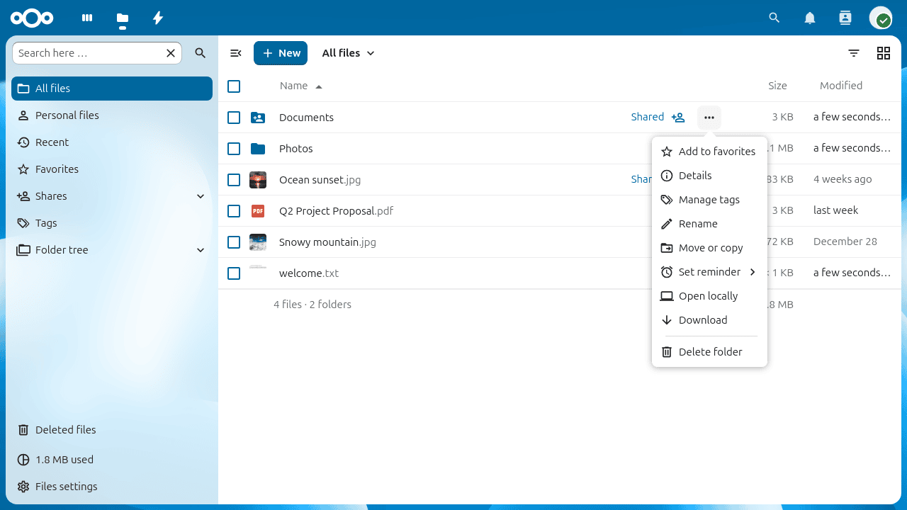
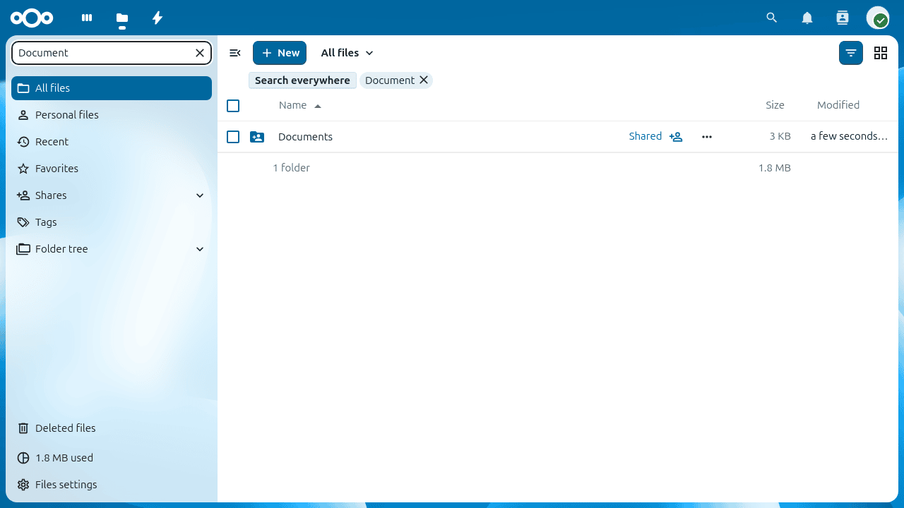
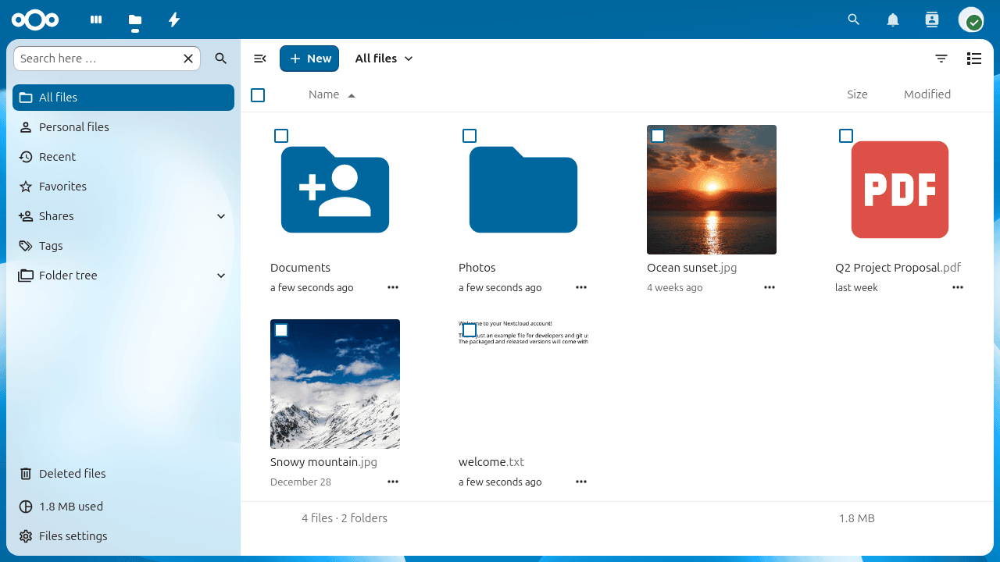
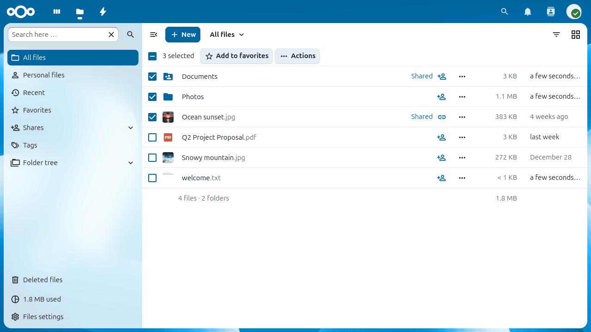

Доступ к файлам через веб-интерфейс Nextcloud
Файлы Nextcloud доступны через веб-интерфейс: в нём можно создавать, просматривать, редактировать и удалять файлы, а также делиться ими, в том числе повторно. Администратор может отключить некоторые из этих возможностей; если чего-то не хватает, обратитесь к администратору сервера.

Элементы управления файлами
Nextcloud показывает эскизы для изображений, текстовых файлов и других поддерживаемых типов; точный список зависит от конфигурации сервера.
В каждой строке файла или папки есть кнопка меню действий с тремя точками. Нажмите её, чтобы переименовать, переместить, скопировать, скачать, удалить элемент или добавить его в избранное. У файлов, добавленных в избранное, показывается значок звезды:

Примечание
Всё избранное можно быстро найти с помощью пункта Избранное в левой боковой панели.
События и комментарии
На вкладке События в боковой панели показывается хронологический журнал изменений файла: загрузки, правки, общий доступ и комментарии. Комментарий можно оставить прямо на этой вкладке; комментарии видны всем, у кого есть доступ к файлу:
Поиск и фильтрация
Строка поиска в верхней части страницы позволяет найти файлы по имени среди всех файлов, а поле поиска в левой боковой панели — отфильтровать текущий вид:

Вид сеткой
В приложении «Файлы» по умолчанию используется вид списка. Чтобы переключиться на сетку миниатюр, нажмите кнопку переключения сетки над списком файлов — это удобно для просмотра папок с изображениями:

Чтобы вернуться к виду списка, нажмите кнопку ещё раз.
Загрузка и создание файлов
Чтобы загрузить файлы с компьютера или создать новые объекты в текущей папке, нажмите кнопку + в верхней части списка файлов:
В этом меню доступны следующие пункты:
- Загрузить файлы
Открывает окно выбора файлов, чтобы загрузить один или несколько файлов с компьютера. Файлы также можно перетащить прямо из файлового менеджера в список файлов.
- Загрузить папку
Загружает папку целиком, сохраняя её структуру.
- Новая папка
Создаёт новую пустую папку в текущей папке.
- Новый документ / Новая электронная таблица / Новая презентация
Создаёт новый файл с помощью встроенного редактора Nextcloud Text или Office, если он включён администратором.
Выбор файлов и папок
Чтобы выбрать файл или папку, установите флажок слева от него. Чтобы выбрать все объекты в текущей папке, установите флажок в заголовке столбца.
Если выбран один или несколько объектов, в верхней части списка появляются кнопки действий. Выбранные объекты можно удалить или скачать все сразу. При скачивании нескольких объектов создаётся архив ZIP.

Примечание
Если кнопка Скачать не видна, администратор отключил эту возможность.
Перемещение файлов
Чтобы переместить файл или папку, перетащите их в папку назначения. Также можно выбрать Переместить или копировать в меню действий с тремя точками, чтобы переместить или скопировать элементы в папку, выбранную в диалоговом окне выбора.
Предварительный просмотр файлов
Нажмите на имя файла, чтобы открыть предварительный просмотр прямо в Nextcloud. Поддерживаются изображения, обычный текст, PDF, а также — в зависимости от сервера — офисные документы и аудиофайлы. Если формат файла не поддерживается для предварительного просмотра, файл скачивается на компьютер.
Видеопроигрыватель
Видео можно воспроизводить прямо в Nextcloud, нажав на файл. Воспроизведение зависит от браузера и видеокодека. Сведения о совместимости см. в разделе MDN: поддерживаемые форматы мультимедиа.